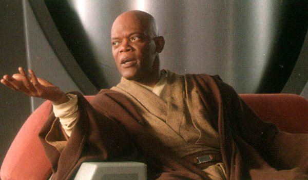
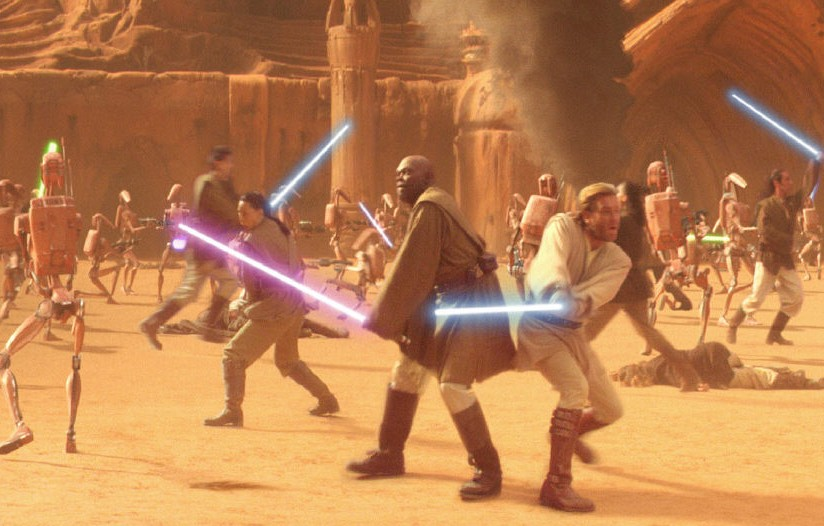
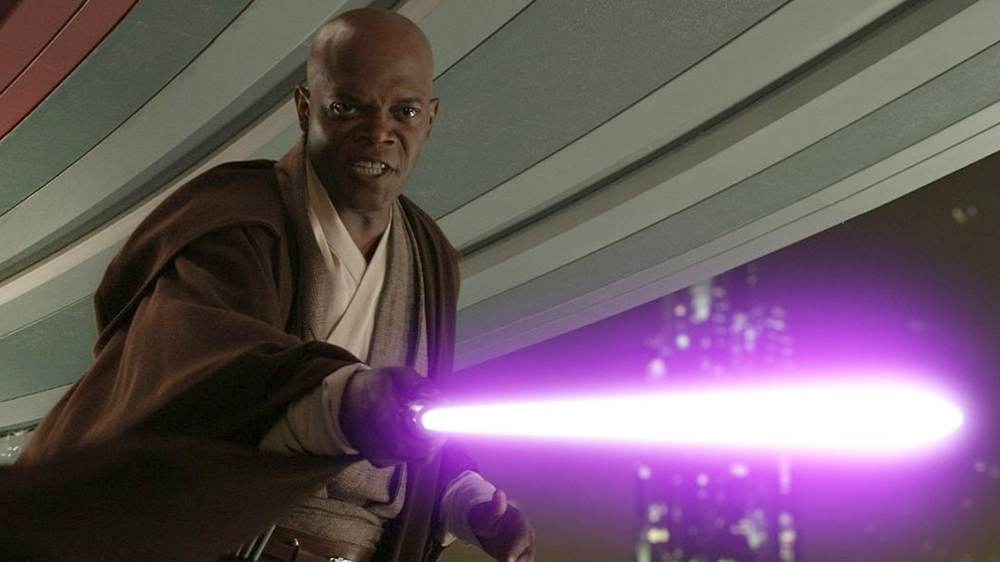

Seule la réputation de Maître Yoda est supérieure à la sienne : Maître Mace Windu dirige le Conseil des Jedi durant les dernières années de la République. Il est trahi et tué, mais jamais il n'a baissé les bras dans sa lutte contre le côté obscur.
|  |  |  |